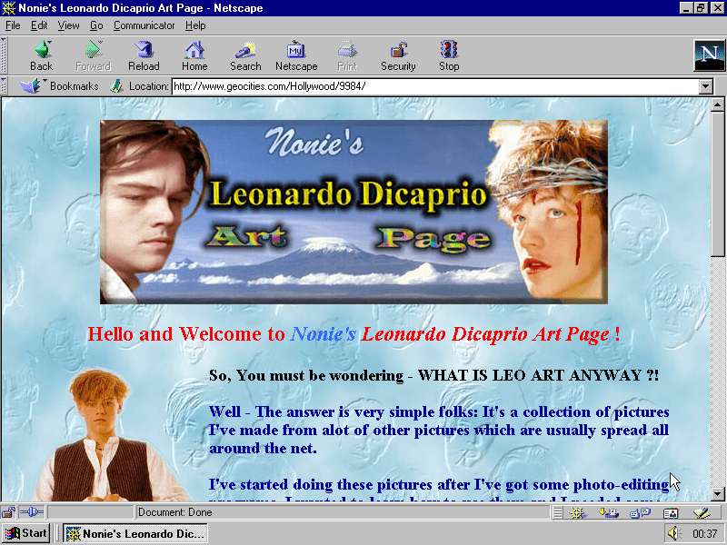

Passion (due 9/14)
Make a small website about a passion or interest of yours. We’ll be using this project as a way to introduce ourselves, as well as a space to practice and experiment writing html and css. An important goal of this project is to allow yourself to experiment and remain flexible with the presentation of the site. Most likely, this is the first site you will be writing by hand — try to let it grow and learn with you!
Start by collecting content about the passion you've chosen from wherever that content is found: internet, books, outside (maybe it is content you have authored yourself) and then start to write your code.
Part 1 - HTML
Set up the structure of the site using only html at first. For this step, don’t worry about the styling or appearance of the site just yet. It may look bland, but these are the important bones of your site. A strong site is dependent on the quality of its bones (html)!
The site should have at least:
- 1 heading <h1></h1>
- 1 paragraph <p></p>
- 1 image <img>
- 1 list (with at least 3 items) <ul><li></li></ul>
- 1 link <a></a>
However, you should include more than what’s required depending on how you decide to share the passion.
Part 2 - CSS
Now add css to your site. Look through the w3schools CSS Reference and play around with different properties——there’s a lot and many will probably seem daunting or confusing, but don’t let that deter you! Each reference has a tutorial for implementing the property and using it. Try to get used to navigating the w3schools site and following tutorials.
Allow yourself to experiment with things. You may not know how to get it to look exactly the way you imagine at first, but the key to learning how to make websites is exploration and experimentation. You may come across something unintended that’s even better!
Requirements:
- alter the styling for each of the required elements from part 1
- find 3 css properties on w3schools that we didn’t cover in class to use on your site
Part 3 - Variation
For this step, create a new version of the site using a different CSS stylesheet. You’ll want to treat this as a separate website, with its own distinct folder. You can copy the HTML document that you wrote in Part 1 into the new folder, but you will need to write a new stylesheet.
Make this version visually (and structurally) distinct from your first iteration. Consider different methods of establishing hierarchy, arranging information, and conveying mood, energy, and vibe. Explore even more properties from w3schools.
Examples
